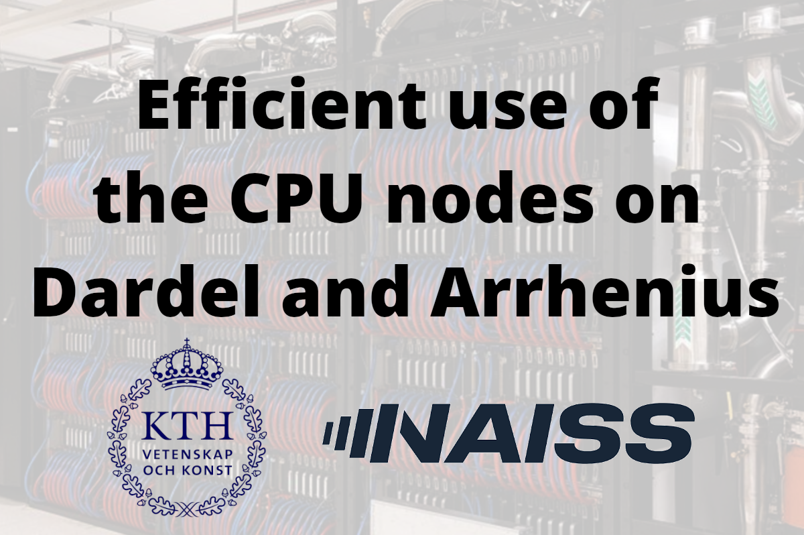

Home
HPE training on Efficient use of the CPU nodes on Dardel and Arrhenius
Dardel and Arrhenius Intensive Course: Advanced Workshop on CPU partition
Edit on GitHub
Dardel and Arrhenius Intensive Course: Advanced Workshop on CPU partition
¶
Day 1: Tuesday 27/01
¶
Schedule (times in CET)
¶
Start
Duration
Item
09:00
10
Welcome,
introduction to the course.
Course organizaion
GitHub